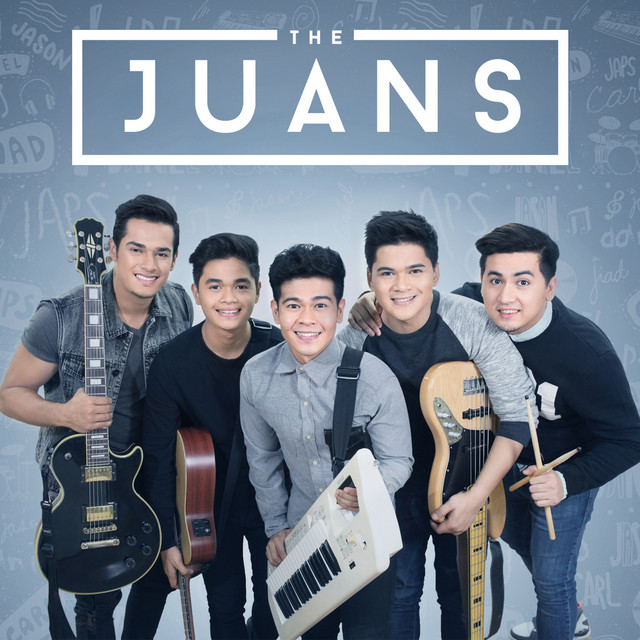
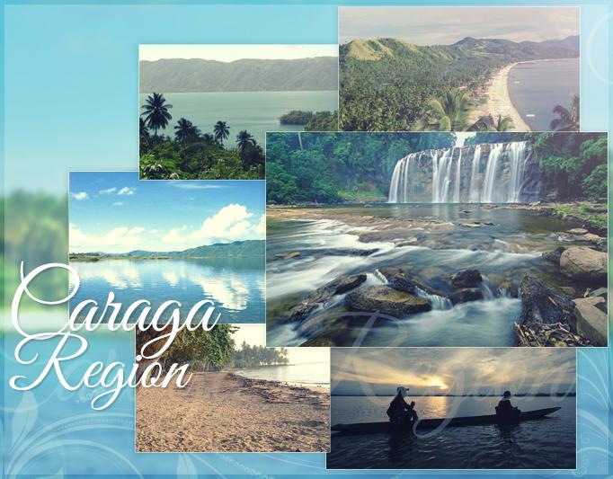

My childHood
Childhood is the most unforgettable period of my life. Everyone has childhood memories. My childhood memories took place in Eritrea.
These memories that are happiest and saddest memories are still in my mind.
Sometimes I remember things that have happened in my childhood period and they just make me laugh. Childhood memories can be bad or good, but we cant forget them. For these reasons,
childhood memories are the most important parts of my life. Specifically, also I have some good memories of childhood.
My Teenage Life
Every one of us went through teenager era, it is the most embarrassing part of your life. Your body and mind begin to change.
Despite what I had in my teenage time, it was the best era. Therefore, these are important to me due my present as well as my future.
Which they are, what happened during that time, how I moved on since it broke me, and how I changed internally and externally.
My Adulthood
Young adults also enjoy clear sensory abilities, strength and stamina. In their young age, they have clear vision and response to sound unlike their older counterparts.
The older they get, visual clarity reduces and adjustments to various intensities of light become a challenge.
Ideally, persons in their old age receive only a third of the light that young adults receive in their retina.
My Favorites
My Favorites Band

The Juans were formed in 2013. They made their debut with their self-titled EP in 2015, which included the
singles 'Atin Ang Mundo', 'Prom' and 'Magkasama'.
That release was followed by the 2018 EP, 'Umaga', which also served as the title of a live album which the band released in 2020
My Favorite Place

Travel Authentic Philippines offers a variety of Caraga tours. Teeming with natural attractions, the region of Caraga
is one of the most alluring treasures of Mindanao. Despite its rugged beauty and plethora of enticing landmarks,
this northeastern corner of Mindanao has been largely overlooked by tourists.